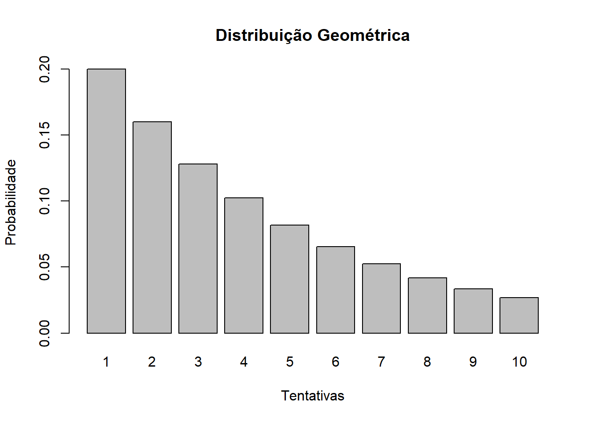
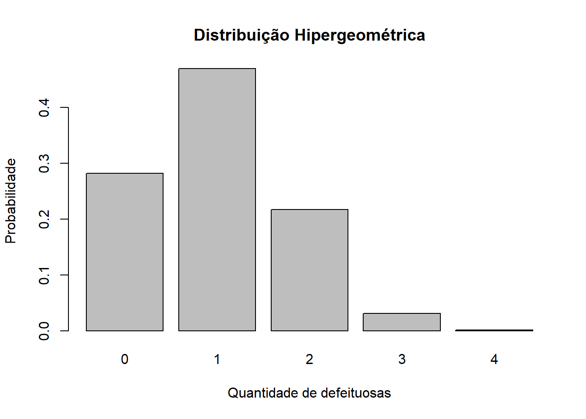
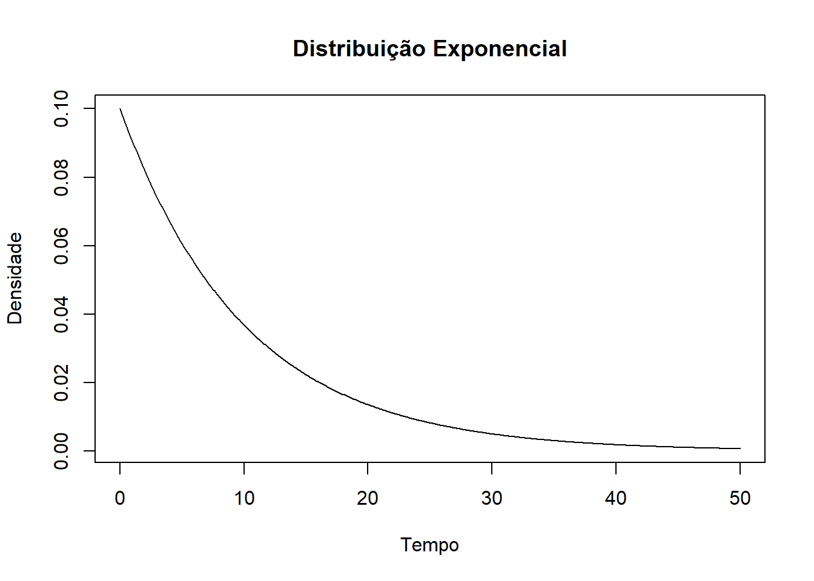
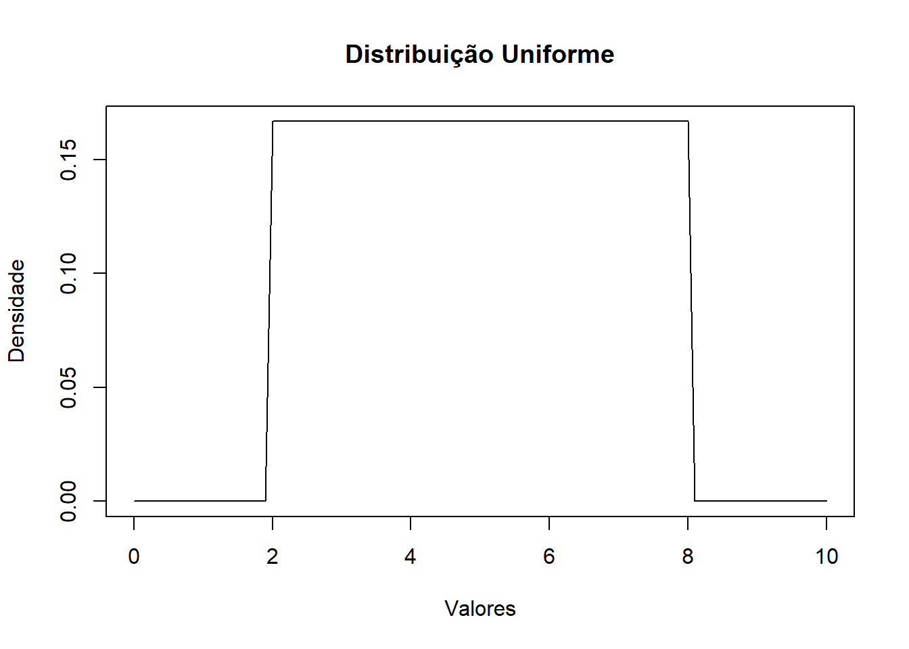

Código
library(leem)
dbinom(2, size = 8, prob = 0.1)[1] 0.1488035

Estatística e Probabilidade
Prof. Ben Dêivide (DEFIM/CAP/UFSJ)
A Estatística e a Probabilidade possuem grande importância na análise de fenômenos aleatórios presentes em diversas áreas, especialmente na computação, engenharia e ciências aplicadas. As distribuições de probabilidade permitem modelar matematicamente situações incertas e calcular as chances de ocorrência de determinados eventos, sendo fundamentais para a tomada de decisões baseada em dados.
Entre as principais distribuições estudadas destacam-se a Distribuição Binomial, a Distribuição de Poisson e a Distribuição Normal, associadas a variáveis aleatórias discretas e contínuas. Essas distribuições são amplamente utilizadas para representar situações reais, como falhas em sistemas, quantidade de acessos a servidores e tempos de resposta de processos computacionais.
O objetivo deste trabalho é apresentar as características e aplicações dessas distribuições, demonstrando exemplos práticos com cálculos realizados de forma analítica e utilizando a linguagem R e o pacote leem . Além disso, serão exploradas outras distribuições discretas e contínuas, ampliando o entendimento sobre a modelagem estatística e suas aplicações práticas
Neste trabalho foi utilizada uma abordagem teórica e computacional para o estudo das distribuições de probabilidade discretas e contínuas. Inicialmente, realizou-se uma revisão conceitual das distribuições estudadas em sala de aula, identificando suas principais características, aplicações e os tipos de variáveis aleatórias associadas. Em seguida, foram desenvolvidos exemplos práticos relacionados à área de computação e tecnologia, realizando os cálculos das probabilidades de forma analítica.
Utilizada para modelar a quantidade de sucessos em um número fixo de tentativas independentes.
library(leem)
dbinom(2, size = 8, prob = 0.1)[1] 0.1488035Aplicada na modelagem da quantidade de ocorrências de eventos em um intervalo de tempo ou espaço.
dpois(6, lambda = 4)[1] 0.1041956pnorm(58, mean = 50, sd = 5)[1] 0.9452007Utilizada para determinar a probabilidade do primeiro sucesso ocorrer em determinada tentativa.
dgeom(3, prob = 0.2)[1] 0.1024Aplicada em situações de amostragem sem reposição.
dhyper(2, m = 5, n = 15, k = 4)[1] 0.2167183Utilizada para modelar o tempo entre ocorrências de eventos.
pexp(5, rate = 0.1)[1] 0.3934693Empregada quando todos os valores de um intervalo possuem a mesma probabilidade de ocorrência.
punif(5, min = 2, max = 8) -
punif(3, min = 2, max = 8)[1] 0.3333333Além das distribuições Binomial, Poisson e Normal, existem outras distribuições importantes utilizadas na modelagem de variáveis aleatórias discretas e contínuas. Neste trabalho foram estudadas as distribuições Geométrica, Hipergeométrica, Exponencial e Uniforme, cada uma aplicada a diferentes tipos de problemas estatísticos.
As distribuições discretas são utilizadas quando a variável aleatória assume valores inteiros e contáveis.
A Distribuição Geométrica é utilizada para determinar a probabilidade de o primeiro sucesso ocorrer em uma determinada tentativa. Ela considera experimentos independentes com apenas dois resultados possíveis: sucesso ou fracasso.
Sua função de probabilidade é dada por:
x <- 1:10
y <- dgeom(x - 1, prob = 0.2)
barplot(y,
names.arg = x,
main = "Distribuição Geométrica",
xlab = "Tentativas",
ylab = "Probabilidade")
Essa distribuição é muito aplicada em sistemas computacionais, como tentativas de autenticação, transmissões de dados e processos de repetição até sucesso.
A Distribuição Hipergeométrica é utilizada em situações de amostragem sem reposição. Diferentemente da Binomial, a probabilidade de sucesso muda a cada retirada, pois os elementos não retornam ao conjunto inicial.
Sua função é dada por:
x <- 0:4
y <- dhyper(x, m = 5, n = 15, k = 4)
barplot(y,
names.arg = x,
main = "Distribuição Hipergeométrica",
xlab = "Quantidade de defeituosas",
ylab = "Probabilidade")
Essa distribuição pode ser aplicada em controle de qualidade, análise de componentes defeituosos e seleção de dados em bancos de informações.
As distribuições contínuas são utilizadas quando a variável aleatória pode assumir infinitos valores dentro de um intervalo.
A Distribuição Exponencial modela o tempo entre ocorrências de eventos independentes. É amplamente utilizada em estudos de confiabilidade e filas de atendimento.
x <- seq(0, 50, by = 0.1)
y <- dexp(x, rate = 0.1)
plot(x, y,
type = "l",
main = "Distribuição Exponencial",
xlab = "Tempo",
ylab = "Densidade")
Na computação e engenharia, essa distribuição pode representar o tempo entre falhas de servidores, duração de componentes eletrônicos e intervalo entre chegadas de pacotes em redes.
##Distribuição Uniforme
A Distribuição Uniforme é utilizada quando todos os valores de um intervalo possuem a mesma probabilidade de ocorrência.
Sua função densidade é:
x <- seq(0, 10, by = 0.1)
y <- dunif(x, min = 2, max = 8)
plot(x, y,
type = "l",
main = "Distribuição Uniforme",
xlab = "Valores",
ylab = "Densidade")
Apresente e interprete os resultados obtidos a partir dos dados coletados.
Em seguida, discuta os resultados à luz dos conceitos teóricos:
O estudo das distribuições de probabilidade permitiu compreender a aplicação das variáveis aleatórias discretas e contínuas em diferentes problemas estatísticos e computacionais. As distribuições analisadas mostraram-se importantes para modelar fenômenos reais e calcular probabilidades de forma eficiente.
Os resultados obtidos analiticamente e no R apresentaram compatibilidade, demonstrando a utilidade das ferramentas computacionais no estudo da Estatística. Além disso, os gráficos facilitaram a visualização e interpretação do comportamento de cada distribuição.
Assim, conclui-se que as distribuições de probabilidade possuem grande importância na análise de dados e na tomada de decisões em diversas áreas do conhecimento.
R CORE TEAM. R: A Language and Environment for Statistical Computing. Vienna: R Foundation for Statistical Computing, 2025. Disponível em: R Project for Statistical Computing . Acesso em: 12 maio 2026.
CRAN. Pacote leem. Comprehensive R Archive Network, 2025. Disponível em: Pacote leem no CRAN . Acesso em: 12 maio 2026.